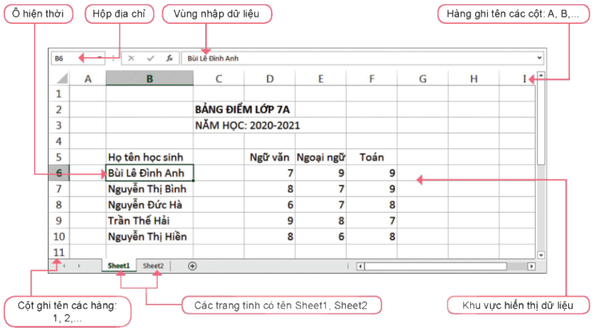
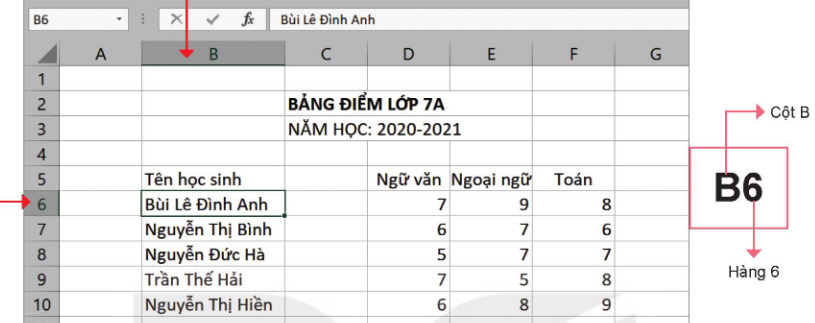
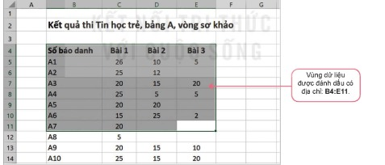
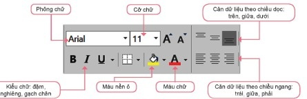
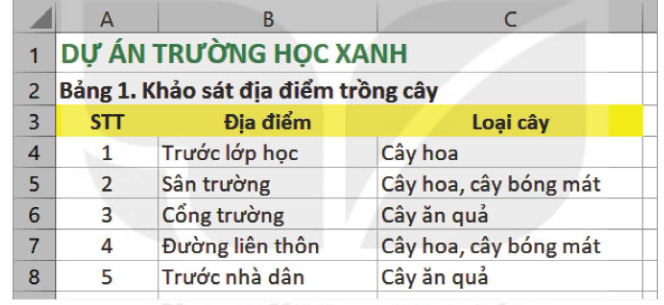

Dành cho giáo viên
Theo dõi lớp
| Học sinh / Nhóm | Đã nộp | Cập nhật |
|---|
Bước 1
1 Khởi động
Khởi động Dự án Trường học xanh
Nhóm của em được giao nhiệm vụ khảo sát, xây dựng và thực hiện dự án Trường học xanh. Dự án thực hiện trồng cây phủ xanh nhà trường bằng cách tổ chức cho học sinh khối 7 tham gia. Hãy khảo sát cảnh quan của nhà trường và thảo luận để trả lời các câu hỏi sau:
- Những vị trí nào trong trường có thể trồng thêm cây?
- Loại cây nào phù hợp cho mỗi vị trí?
- Những công việc gì cần được thực hiện?
- Để thực hiện dự án, cần thu thập và tính toán rất nhiều dữ liệu. Nên sử dụng phần mềm nào trên máy tính để thực hiện những công việc đó?
Ghi bài Khởi động
Sau khi thầy cô chốt, em chép nội dung dưới đây vào vở.
Bước 2 · Hình thành kiến thức mới
2.1 Giao diện phần mềm bảng tính
Hoạt động 1 Làm quen với giao diện phần mềm bảng tính
Quan sát giao diện làm việc của một phần mềm bảng tính mà em biết. Nêu tên các vùng chính và chức năng của chúng.
Đọc hiểu Các thành phần giao diện
Đọc mục 1 (SGK trang 28–29). Phần mềm bảng tính là phần mềm ứng dụng giúp em trình bày thông tin dưới dạng bảng một cách cô đọng và dễ so sánh, thực hiện các tính toán phổ biến (tính tổng, trung bình cộng, xác định giá trị lớn nhất, nhỏ nhất,…), vẽ các biểu đồ minh hoạ các số liệu tương ứng,… Không chỉ thế, khi tính toán bằng phần mềm bảng tính, nếu dữ liệu gốc thay đổi, kết quả tính toán trên các số liệu đó sẽ được tự động cập nhật. Có rất nhiều phần mềm bảng tính khác nhau như Google Sheets, Microsoft Excel, LibreOffice Calc,… và chúng đều có các chức năng tương tự nhau. Giao diện của các phần mềm bảng tính có dạng tương tự như Hình 6.1.

- Thẻ và nhóm lệnh chứa các lệnh và biểu tượng lệnh.
- Vùng nhập dữ liệu là nơi thực hiện trực tiếp việc nhập dữ liệu vào bảng tính.
- Khu vực chính của bảng tính là nơi lưu trữ và hiển thị dữ liệu. Dữ liệu được lưu trữ trong các trang tính. Mỗi bảng tính có thể chứa nhiều trang tính. Mỗi trang tính là một lưới dữ liệu gồm các hàng và cột. Tên của trang tính nằm ở phía dưới cửa sổ bảng tính.
- Mỗi trang tính thường có hàng ghi tên cột ở phía trên và cột ghi tên hàng ở bên trái. Các hàng được đặt tên bằng các số: 1, 2, 3,… theo thứ tự từ trên xuống dưới. Các cột được đặt tên bằng các chữ cái: A, B, C,… theo thứ tự từ trái sang phải.
- Giao của mỗi hàng và một cột trên trang tính tạo thành một ô tính (gọi tắt là ô). Luôn có một ô tính là ô hiện thời mà chúng ta đang quan sát, đang nhập dữ liệu hoặc tính toán. Ô hiện thời luôn được đóng khung. Địa chỉ của ô hiện thời luôn hiển thị tại hộp địa chỉ nằm bên trái vùng nhập dữ liệu.
Câu hỏi SGK trang 29
Ghi bài 1. Giao diện phần mềm bảng tính
Sau khi thầy cô chốt, em chép nội dung dưới đây vào vở.
Bước 2 · Hình thành kiến thức mới
2.2 Ô và vùng trên trang tính
Hoạt động 2 Ô và vùng trên trang tính
Em hãy quan sát kĩ hơn các ô và vùng trên trang tính. Xác định cách di chuyển con trỏ trên trang tính thông qua ô hiện thời. Xác định cách phần mềm đánh địa chỉ các ô và vùng dữ liệu. Trong Hình 6.2, ô ghi tên học sinh “Bùi Lê Đình Anh” được xác định như thế nào?

Mỗi ô trên trang tính được đánh địa chỉ theo cột và hàng, ví dụ A1, B3, C10,… Địa chỉ của ô được quy định là tên cột ghép với tên hàng.
Nhiều ô liền kề tạo thành hình chữ nhật trên trang tính được gọi là vùng dữ liệu (gọi tắt là vùng). Vùng dữ liệu được đánh địa chỉ theo địa chỉ của ô góc trên bên trái và ô góc dưới bên phải, cách nhau bởi dấu “:”. Ví dụ B4:E11 là một địa chỉ của vùng dữ liệu.
Nhiều ô liền kề tạo thành hình chữ nhật trên trang tính được gọi là vùng dữ liệu (gọi tắt là vùng). Vùng dữ liệu được đánh địa chỉ theo địa chỉ của ô góc trên bên trái và ô góc dưới bên phải, cách nhau bởi dấu “:”. Ví dụ B4:E11 là một địa chỉ của vùng dữ liệu.

Các thao tác chọn (đánh dấu) một ô, hàng, cột, vùng trên trang tính:
- Chọn một ô: nháy chuột vào ô cần chọn.
- Chọn một hàng: nháy chuột vào tên hàng cần chọn.
- Chọn một cột: nháy chuột vào tên cột cần chọn.
- Chọn một vùng: kéo thả chuột từ một ô góc (ví dụ ô góc trên bên trái) đến ô ở góc đối diện (ô góc dưới bên phải). Ô chọn đầu tiên sẽ là ô hiện thời.
Câu hỏi SGK trang 30
Ghi bài Ô và vùng
Sau khi thầy cô chốt, em chép nội dung dưới đây vào vở.
Bước 2 · Hình thành kiến thức mới
2.3 Nhập, chỉnh sửa và định dạng dữ liệu trong trang tính
Hoạt động 3 Nhập, chỉnh sửa và định dạng dữ liệu
Quan sát và thực hiện các bước nhập dữ liệu trong trang tính và trả lời các câu hỏi: 1. Có thể nhập dữ liệu vào trang tính theo bao nhiêu cách? Hãy nêu cách đó. 2. Dữ liệu được nhập vào các ô sẽ được tự động căn chỉnh như thế nào?
a) Cách nhập dữ liệu. Bước 1. Nháy chuột vào ô muốn nhập. Bước 2. Thực hiện việc nhập dữ liệu từ bàn phím (hoặc nháy chuột vào vùng nhập dữ liệu, sau đó mới tiến hành nhập dữ liệu từ bàn phím), nhập xong nhấn phím Enter.
Quan sát Hình 6.5 (SGK trang 31): dữ liệu văn bản sẽ tự động căn trái; dữ liệu số, ngày tháng,… sẽ tự động căn phải. Khi nhập dữ liệu vào ô, phần mềm sẽ tự động nhận biết, phân loại dữ liệu theo các kiểu dữ liệu khác nhau như văn bản, số, ngày tháng.
b) Chỉnh sửa dữ liệu. Cách 1: nháy đúp chuột vào ô cần sửa, con trỏ soạn thảo xuất hiện trong ô, sửa dữ liệu và nhấn phím Enter để kết thúc. Cách 2: nháy chuột vào ô cần sửa, sau đó nháy chuột vào vùng nhập dữ liệu, sửa dữ liệu và nhấn phím Enter để kết thúc.
Thử trên bảng mô phỏng ở mục 2.2: nhập vào các ô Nguyễn Việt Hương, 9/23/2010, 8.5, Hoàn Kiếm và quan sát dữ liệu tự căn bên nào.
a) Cách nhập dữ liệu. Bước 1. Nháy chuột vào ô muốn nhập. Bước 2. Thực hiện việc nhập dữ liệu từ bàn phím (hoặc nháy chuột vào vùng nhập dữ liệu, sau đó mới tiến hành nhập dữ liệu từ bàn phím), nhập xong nhấn phím Enter.
Quan sát Hình 6.5 (SGK trang 31): dữ liệu văn bản sẽ tự động căn trái; dữ liệu số, ngày tháng,… sẽ tự động căn phải. Khi nhập dữ liệu vào ô, phần mềm sẽ tự động nhận biết, phân loại dữ liệu theo các kiểu dữ liệu khác nhau như văn bản, số, ngày tháng.
b) Chỉnh sửa dữ liệu. Cách 1: nháy đúp chuột vào ô cần sửa, con trỏ soạn thảo xuất hiện trong ô, sửa dữ liệu và nhấn phím Enter để kết thúc. Cách 2: nháy chuột vào ô cần sửa, sau đó nháy chuột vào vùng nhập dữ liệu, sửa dữ liệu và nhấn phím Enter để kết thúc.
Thử trên bảng mô phỏng ở mục 2.2: nhập vào các ô Nguyễn Việt Hương, 9/23/2010, 8.5, Hoàn Kiếm và quan sát dữ liệu tự căn bên nào.
Đọc hiểu c) Định dạng dữ liệu
Để định dạng dữ liệu trong một vùng của trang tính em thực hiện: Bước 1. Chọn vùng dữ liệu. Bước 2. Sử dụng các lệnh định dạng dữ liệu trong nhóm lệnh Font và Alignment của thẻ Home (Hình 6.6).

Ghi bài 2. Nhập, sửa, định dạng dữ liệu
Sau khi thầy cô chốt, em chép nội dung dưới đây vào vở.
Bước 2 · Thực hành
2.4 Thực hành: Nhập thông tin khảo sát dự án Trường học xanh
Nhiệm vụ Nhập thông tin khảo sát ban đầu
Nhiệm vụ: Nhập thông tin khảo sát ban đầu của dự án Trường học xanh. Hướng dẫn (SGK dùng Microsoft Excel 2016):
- Bước 1. Mở phần mềm Microsoft Excel bằng cách nháy đúp chuột lên biểu tượng trên màn hình. Chọn Blank workbook để tạo một bảng tính mới.
- Bước 2. Nhập dữ liệu khảo sát: tại ô A1: DỰ ÁN TRƯỜNG HỌC XANH; tại ô A2: Bảng 1. Khảo sát địa điểm trồng cây; các cột thông tin chính: STT, Địa điểm, Loại cây (hàng 3) và 5 dòng dữ liệu như bảng dưới.
- Bước 3. Chỉnh sửa, định dạng: điều chỉnh độ rộng các cột (đưa con trỏ chuột vào vạch giữa các tên cột rồi kéo thả); tiêu đề bảng (ô A1) chữ in đậm, màu xanh lá cây, tăng cỡ chữ; cột STT căn giữa; hàng tiêu đề của bảng (hàng 3) nền màu vàng và căn giữa.
- Bước 4. Nháy đúp vào tên trang tính Sheet1 và nhập 1. Khảo sát để đổi tên cho trang tính.
- Bước 5. Lưu bảng tính với tên THXanh.xlsx bằng lệnh File/Save hoặc nhấn tổ hợp phím Ctrl+S.
| STT | Địa điểm | Loại cây |
|---|---|---|
| 1 | Trước lớp học | Cây hoa |
| 2 | Sân trường | Cây hoa, cây bóng mát |
| 3 | Cổng trường | Cây ăn quả |
| 4 | Đường liên thôn | Cây hoa, cây bóng mát |
| 5 | Trước nhà dân | Cây ăn quả |

Ghi bài 3. Thực hành
Sau khi thầy cô chốt, em chép nội dung dưới đây vào vở.
Bước 3
3 Luyện tập
Luyện tập Câu hỏi SGK trang 33
Ghi bài Luyện tập
Sau khi thầy cô chốt, em chép nội dung dưới đây vào vở.
Bước 4
4 Vận dụng
Vận dụng Ngày tháng và bảng danh sách cây
Thử trên bảng mô phỏng ở mục 2.2: nhập 12/15/2020 vào một ô và 15/12/2020 vào ô khác, quan sát dữ liệu được căn bên nào.
Ghi bài Vận dụng
Sau khi thầy cô chốt, em chép nội dung dưới đây vào vở.